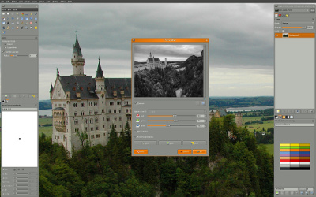
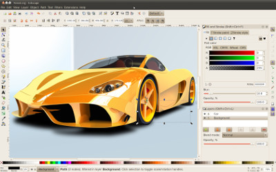
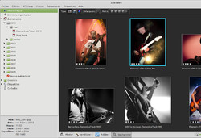
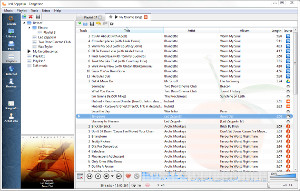
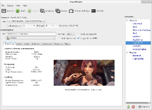
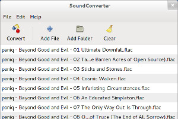
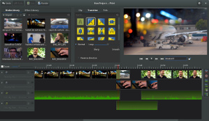
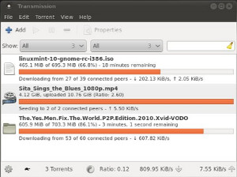

|
This is a list of recommended applications suited for home users. When you click the install button all listed applications are going to be installed on your system. You can use the software manager to install them separately. |
|
| Gimp | |
|
GIMP is an acronym for GNU Image Manipulation Program. It is a freely distributed program for such tasks as photo retouching, image composition and image authoring. It has many capabilities. It can be used as a simple paint program, an expert quality photo retouching program, an online batch processing system, a mass production image renderer, an image format converter, etc. |
 |
| Homepage: http://www.gimp.org | |
| Inkscape | |
| Inkscape is an open-source vector graphics editor similar to Adobe Illustrator, Corel Draw, Freehand, or Xara X. What sets Inkscape apart is its use of Scalable Vector Graphics (SVG), an open XML-based W3C standard, as the native format. |  |
| Homepage: https://inkscape.org | |
| Shotwell | |
|
Shotwell is an image organizer designed to provide personal photo management. Shotwell can import photos and videos from a digital camera directly. Shotwell automatically groups photos and videos by date, and supports tagging. Its image editing features allow users to straighten, crop, eliminate red eye, and adjust levels and color balance. |
 |
| Homepage: https://wiki.gnome.org/Apps/Shotwell | |
| Clementine | |
|
Clementine is a modern music player and library organizer. Clementine is a multiplatform music player. It is inspired by Amarok 1.4, focusing on a fast and easy-to-use interface for searching and playing your music. |
 |
| Homepage: https://www.clementine-player.org | |
| HandBrake | |
| HandBrake is a tool for converting video from nearly any format to a selection of modern, widely supported codecs. |  |
| Homepage: https://handbrake.fr | |
| SoundConverter | |
| SoundConverter is the leading audio file converter. It reads anything GStreamer can read (Ogg Vorbis, AAC, MP3, FLAC, WAV, AVI, MPEG, MOV, M4A, AC3, DTS, ALAC, MPC, Shorten, APE, SID, MOD, XM, S3M, etc...), and writes to Opus, Ogg Vorbis, FLAC, WAV, AAC, and MP3 files. |  |
| Homepage: http://soundconverter.org | |
| Pitivi | |
| Pitivi is a Free video editor with a beautiful and intuitive user interface, a clean codebase and a fantastic community. |  |
| Homepage: http://www.pitivi.org | |
| Transmission | |
| Transmission is a BitTorrent client which features a simple interface on top of a cross-platform back-end. |  |
| Homepage: https://www.transmissionbt.com | |